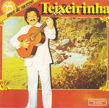
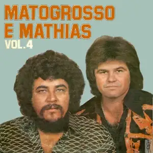
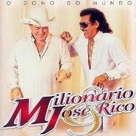
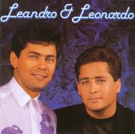
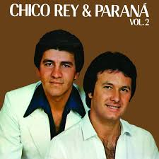
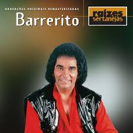
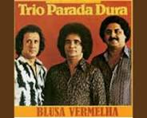
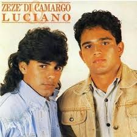
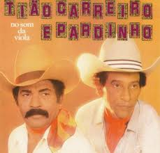

Teixeirinha
Teixeirinha (Vítor Mateus Teixeira; 1927–1985) foi um dos maiores expoentes da música gaúcha e um ídolo popular brasileiro, conhecido como "Rei do Disco" por suas recordistas vendas. Cantor, compositor e cineasta, compôs 1.200 canções e estrelou 12 filmes, destacando sucessos como "Coração de Luto" e "Querência Amada".

João Mineiro & Marciano
João Mineiro e Marciano foram uma icônica dupla sertaneja brasileira formada por João Sant'Ângelo (1937–2012) e José Marciano (1951–2019), pioneiros no sertanejo romântico nos anos 70/80. Com sucessos como "Ainda Ontem Chorei de Saudade" e "Seu Amor Ainda é Tudo", venderam milhões de discos e tiveram programa no SBT, separando-se em 1993.

Mato Grosso & Mathias
Matogrosso & Mathias é uma icônica dupla sertaneja brasileira formada em 1966 (ativa desde 1970/76), conhecida como "a mais romântica do Brasil". Com foco no sertanejo romântico, emplacaram sucessos como "Tentei te Esquecer", "De Igual pra Igual" e "24 Horas de Amor". O pioneiro Matogrosso segue na formação, hoje com o terceiro Mathias (Rafael Belchior).

Milionário & José Rico
A lendária dupla de ouro, formados em 1970 em São Paulo, foram uma dupla sertaneja icônica, apelidada de "Gargantas de Ouro". Com o sucesso "Estrada da Vida" (1978), venderam milhões de discos e venderam filmes. José Rico faleceu em 2015, encerrando a parceria de mais de 40 anos, deixando um legado inconfundível.

Leandro & Leonardo
Explodiram no Brasil nos anos 90, foi uma dupla sertaneja brasileira de enorme sucesso, formada pelos irmãos goianos Luís José da Costa (Leandro, 1961–1998) e Emival Eterno da Costa (Leonardo, 1963) em 1983. Venderam 17 milhões de discos e emplacaram sucessos como "Entre Tapas e Beijos". A dupla terminou em 1998 com a precoce morte de Leandro.

Chico Rey & Paraná
Clássicos inesquecíveis do sertanejo, Fizeram grande sucesso entre as décadas de 1980 e 1990 com sucessos como "Canarinho Prisioneiro", "Amor Rebelde" e "Um Degrau na Escada". Chico Rey faleceu em 2016, mas Paraná segue carreira solo.

Barrerito
Voz histórica do Trio Parada Dura, Conhecido por seu timbre único e voz inesquecível, ele gravou diversos LPs, acumulando discos de ouro e platina. Ficou paraplégico após um acidente aéreo em 1982, mas continuou sua carreira com sucesso, marcando a música sertaneja antes de falecer precocemente aos 55 anos.

Trio Parada Dura
Sucessos eternos do sertanejo raiz, é um icônico grupo de música sertaneja raiz, criado em Minas Gerais por volta de 1971/1973, famoso por clássicos como "Fuscão Preto" e "Telefone Mudo". Conhecidos como "Rolling Stones do Sertão", acumulam décadas de sucesso, diversas formações e mais de 100 milhões de discos vendidos.

Zezé Di Camargo & Luciano
Fenômeno nacional, formada pelos irmãos Mirosmar (Zezé) e Welson (Luciano) em 1991, é uma das duplas sertanejas mais icônicas do Brasil. Com mais de 40 milhões de cópias vendidas e o sucesso estrondoso de "É o Amor", a trajetória dos goianos foi eternizada no filme 2 Filhos de Francisco.

Tião Carreiro & Pardinho
Reis da viola caipira, A dupla Tião Carreiro e Pardinho formou-se em 1954. A dupla se apresentou em circos e praças públicas. Venceram o torneio de violeiros patrocinado pela Rádio Tupi de São Paulo em 1956 com o cururu “Canoeiro”, de Zé Carreiro